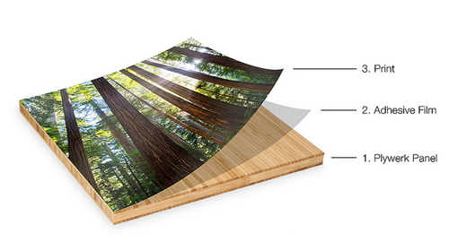

Hey everyone! I’m going to be participating in The Great Necklace Exchange of 2011 over on the Fashion Loves People blog. Go read about it, it sounds super fun and it clearly states that you don’t have to be a designer or even creative…SOLD! I was a little hesitant at first but I’m just gonna go for it and see what I can come up with. Â Who wants in? It’s the last day to sign up!!!
Hump Day Happy Hour: Winter White Sangria with Pomegranate
November 30, 2011 by

I’m going to highlight some winter/holiday inspired drinks every Wednesday for Hump Day Happy Hour. Â This week a sangria found via pinterest from I’ll Have What She’s Having. In true Hump Day Happy Hour style, this looks super easy to whip together…go check out the recipe!
Getting Organized
November 29, 2011 by

I’m in the midst of a complete closet overhaul. Â I have a lot of stuff to get rid of and I also have a lot of things I want to reorganize. Â I’ve been searching pinterest and googling tips and organization tools to get my closet all spiffed up. Â One of the ideas I ran across was to use a regular old bath robe or bath towel hook for your belts. Â So I headed to my neighborhood Target and instead of getting the regular bath/towel hook I had planned on, I ran across these and thought it might be even better. Â So far so good! There were different sizes that will hold different weights. Â If you decide to go this route you might want to take into account that you can’t hang a tiny belt on the wide hook, so you might want to get different sizes for different belts, but man otherwise, this is getting my organizational juices going!
Stockings!
November 9, 2011 by

I am determined to complete, by the end of this month, stockings for everyone in the family so that when Christmas decorations come out, everyone in the family has a stocking. Â I’m not a master on the sewing machine but I can do some basics. Â So my plan is to do the stocking itself out of felt. Â I am going to do names out of material and iron them on via this tutorial on Sir Bubbadoo. Â And then I saw in my Sundance catalog, this stocking that has a pocket for your letter to Santa! So I think it’s all coming together in my mind. Â I’ll post an update of the completed stockings if they don’t look like total ass.
In other news, did you know that you can get a personalized letter back from Santa after you send yours off? Thanks to Danielle, now I do!
photo courtesy of sundancecatalog.com
Plywerk Your Artwork
September 30, 2011 by
Have you heard about Plywerk? Basically Plywerk is designed to help you display artwork or photos in a super easy way. Â There are two ways to go about it, you either upload a photo and have them do it or you can order everything and do it yourself. Â It looks SUPER easy and I can think of SO MANY things to create this way! Â The first thought I had is obviously instagram pics, but then I started really thinking…I think it would be a great alternative to getting a photo on canvas that is so popular these days.
Here’s basically how it works:

And here’s just a sample of how it could look:
[caption id="attachment_9036" align="alignnone" width="500" caption="photo courtesy Amy Perl Photography via Plywerk Blog"] [/caption]
[/caption]
Cool huh? What would you do with it?
iPad Apps I am LOVING
September 29, 2011 by
Aside from the apps from Night & Day Studios that we told you about yesterday (have you entered the giveaway yet?) I’ve got a couple of new favorites that I wanted to tell you about.
First, Montessori Approach to Geography-United States of America.
This app is pretty great at giving your kiddo some basic info about the states and allowing them to puzzle them together to form the United States. My son has been working with this app for a couple of weeks now and he’s definitely got a lot of the states down by shape. He especially likes to say TEXAS!!
Next, Bob Books (There’s a #1 and #2)
This app is not just iPad friendly, it’s also for iPhone and iTouch. It’s a phonics based educational game. Your child will see a very basic sentence. They can hear the sentence, then they can put the letters together and hear each letter and how it makes up the word. Pretty great for early/first readers.
Giveaway! Apps for Kids
September 28, 2011 by
Hey everybody, we’ve got a little giveaway today! I am definitely always on the hunt for some good iPhone or iPad apps for my kiddos. Â I’ve got some favorites that I am going to tell you about tomorrow, however today I am going to tell you about some brand new apps by Night & Day Studios!!
First up…Caillou’s World for iPad

Caillou’s World will show your child a scene in black and white and then highlight in color a specific object. They then have to decide what letter that object starts with. After they do this a few times the whole picture will show up in full color. Your child will be overjoyed at this point. LOL!!
Next up…Peekaboo Barn!

Remember when we told you about Peekaboo Barn? Well y’all it’s totally revamped! More languages! And my absolute favorite feature…record your own voice! The possibilities of the record your own voice thing you guys! Grandparents could record, Parents, an older sibling?!
Lastly, I want to tell you about Richard Scarry’s Busytown.

I am super excited to try this app out with the kiddo. You can dress characters, you can explore rooms and touch and interact with different items on the screen. My first impression of this is that it’s similar to those Look & Find books you see…try and find this item type of thing. My son LOVES those kind of things, so I’m super pumped to play this with him.
So there you have it! Night & Day Studios has so graciously decided to giveaway one of each of these new apps to one lucky Tipsy reader.
If you want to enter the giveaway, leave a comment letting us know which device you would use it on, your iPhone or iPad.
The Rules
One entry per person. No entries after 5:00 pm Central Time Friday. Winners will be randomly selected from among entrants. Winners will be announced Monday.
Postcard + Instagram=Postagram!
September 28, 2011 by
Postagram is an iPhone app that lets you select a photo to be sent as a postcard to whomever you’d like and that person can take the photo and pop out the picture and frame it!
How cool is that?! I think this is PERFECT for grandparents and other relatives for instagrams of your kids OR a perfect way to create your own postcard from a trip you are currently on. Â Uber cool!
Fanged Pumpkins
September 12, 2011 by

You guys, I saw this via Pinterest and I just about died from the cuteness! I SOOOOO want to make these this year for Halloween.  I’m wondering  how long they will last after carving before they start to look all shrunken and gross?
Do you carve a pumpkin every year? Do you get creative or do the same old thing every year?
Etsy Spotlight: Little Things Studio
August 1, 2011 by
Little Things Studio is such a fun and whimsical find. It pairs great patterns with lovely quotes from legends such as E.E. Cummings and CoCo Chanel.  I love the words of wisdom on the prints and the unique geometric work. Framed this would add a burst of color and funk to any room.

If Everyone Is Thinking Alike Then Someone Isn’t Thinking

In Order To Be Irreplaceable One Must Always Be Different


It Takes Courage To Grow Up And Be Who You Really Are


Recent Comments